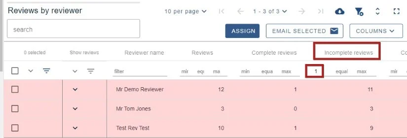
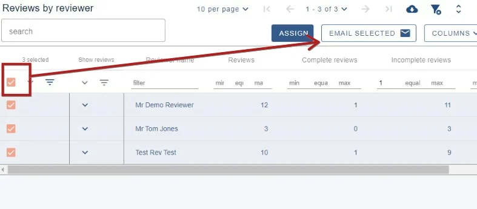
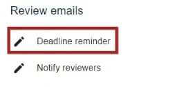

Chasing up late reviews
You may want to chase up reviewers if their reviews are incomplete and the deadline is approaching.#
The guidance below is for event administrators/ organisers. If you are an end user (eg. submitter, reviewer, delegate etc), please click here.
To get an overview of how many reviews are incomplete, go to Event dashboard → Abstract Management → Reviews → By reviewer.
Ensure you have the column Incomplete reviews on display in the table. Enter '1' in the minimum field shown below. Those who have at least 1 incomplete review will appear in the table.

There are two ways of contacting late reviewers
Through the email from tables feature
Select all using the top checkbox to the left of the screen, and click Email selected.

Follow the emails from tables guidance to complete and send your email.
Through the template emails
NB: This option will send a reminder to all reviewers, regardless of whether they have completed their reviews
Go to Event dashboard → Emails → Edit and send**
Then scroll to the Reviews email towards the end of the page and choose Deadline reminder

Edit your email as required, then follow the instructions here to send your email.
Did this page solve it?
Thanks — this helps us fix it.
Didn't solve it? Ask our support team
No question is too small, and there's no charge for asking. Raise a ticket and someone who knows the software will pick it up.